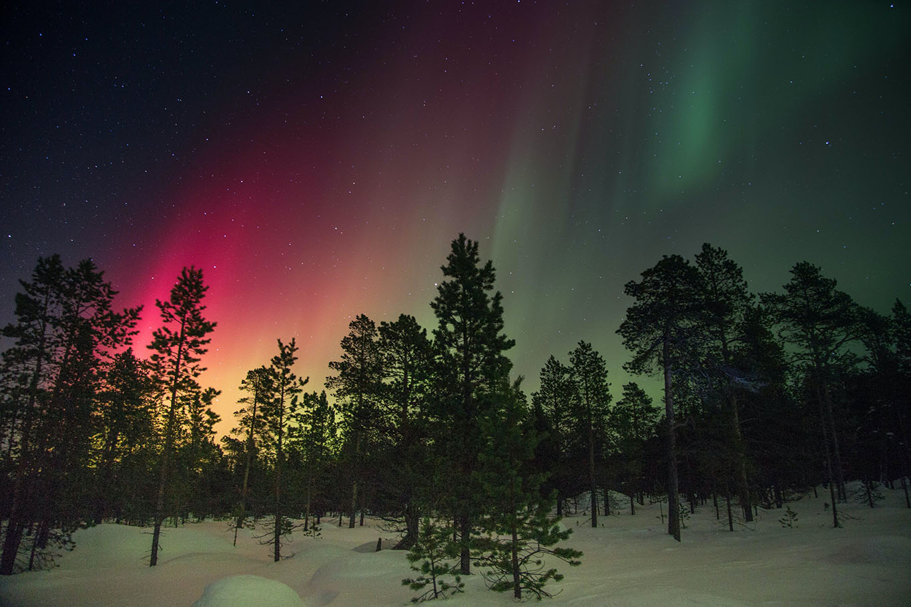

Northern Lights
WHAT ARE NORTHERN LIGHTS?
The bright dancing lights of the aurora are actually collisions between electrically charged particles from the sun that enter the earth's atmosphere. The lights are seen above the magnetic poles of the northern and southern hemispheres. They are known as 'Aurora borealis' in the north and 'Aurora australis' in the south.. Auroral displays appear in many colours although pale green and pink are the most common. Shades of red, yellow, green, blue, and violet have been reported. The lights appear in many forms from patches or scattered clouds of light to streamers, arcs, rippling curtains or shooting rays that light up the sky with an eerie glow.
WHAT CAUSES THE NORTHERN LIGHTS?
The Northern Lights are actually the result of collisions between gaseous particles in the Earth's atmosphere with charged particles released from the sun's atmosphere. Variations in colour are due to the type of gas particles that are colliding. The most common auroral color, a pale yellowish-green, is produced by oxygen molecules located about 60 miles above the earth. Rare, all-red auroras are produced by high-altitude oxygen, at heights of up to 200 miles. Nitrogen produces blue or purplish-red aurora.
The connection between the Northern Lights and sunspot activity has been suspected since about 1880. Thanks to research conducted since the 1950's, we now know that electrons and protons from the sun are blown towards the earth on the 'solar wind'. (Note: 1957-58 was International Geophysical Year and the atmosphere was studied extensively with balloons, radar, rockets and satellites. Rocket research is still conducted by scientists at Poker Flats, a facility under the direction of the University of Alaska at Fairbanks.
The temperature above the surface of the sun is millions of degrees Celsius. At this temperature, collisions between gas molecules are frequent and explosive. Free electrons and protons are thrown from the sun's atmosphere by the rotation of the sun and escape through holes in the magnetic field. Blown towards the earth by the solar wind, the charged particles are largely deflected by the earth's magnetic field. However, the earth's magnetic field is weaker at either pole and therefore some particles enter the earth's atmosphere and collide with gas particles. These collisions emit light that we perceive as the dancing lights of the north (and the south).
The lights of the Aurora generally extend from 80 kilometres (50 miles) to as high as 640 kilometres (400 miles) above the earth's surface.
WHERE IS THE BEST PLACE TO WATCH THE NORTHERN LIGHTS?
Northern Lights can be seen in the northern or southern hemisphere, in an irregularly shaped oval centred over each magnetic pole. The lights are known as 'Aurora borealis' in the north and 'Aurora australis' in the south. Scientists have learned that in most instances northern and southern auroras are mirror-like images that occur at the same time, with similar shapes and colors.
Because the phenomena occurs near the magnetic poles, northern lights have been seen as far south as New Orleans in the western hemisphere, while similar locations in the east never experience the mysterious lights. However the best places to watch the lights (in North America) are in the northwestern parts of Canada, particularly the Yukon, Nunavut, Northwest Territories and Alaska. Auroral displays can also be seen over the southern tip of Greenland and Iceland, the northern coast of Norway and over the coastal waters north of Siberia. Southern auroras are not often seen as they are concentrated in a ring around Antarctica and the southern Indian Ocean.
Areas that are not subject to 'light pollution' are the best places to watch for the lights. Areas in the north, in smaller communities, tend to be best.
WHEN IS THE BEST TIME TO WATCH FOR AURORAL DISPLAYS?
Researchers have also discovered that auroral activity is cyclic, peaking roughly every 11 years. The next peak period is 2013. Winter in the north is generally a good season to view lights. The long periods of darkness and the frequency of clear nights provide many good opportunities to watch the auroral displays. Usually the best time of night (on clear nights) to watch for auroral displays is local midnight (adjust for differences caused by daylight savings time).
LEGENDS OF THE LIGHTS
'Aurora borealis', the lights of the northern hemisphere, means 'dawn of the north'. 'Aurora australis' means 'dawn of the south'. In Roman myths, Aurora was the goddess of the dawn. \par Many cultural groups have legends about the lights. In medieval times, the occurrences of auroral displays were seen as harbingers of war or famine. The Maori of New Zealand shared a belief with many northern people of Europe and North America that the lights were reflections from torches or campfires.
The Menominee Indians of Wisconsin believed that the lights indicated the location of manabai'wok (giants) who were the spirits of great hunters and fishermen. The Inuit of Alaska believed that the lights were the spirits of the animals they hunted: the seals, salmon, deer and beluga whales. Other aboriginal peoples believed that the lights were the spirits of their people.